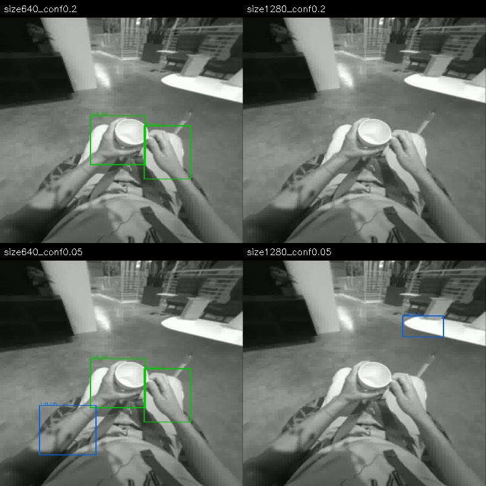
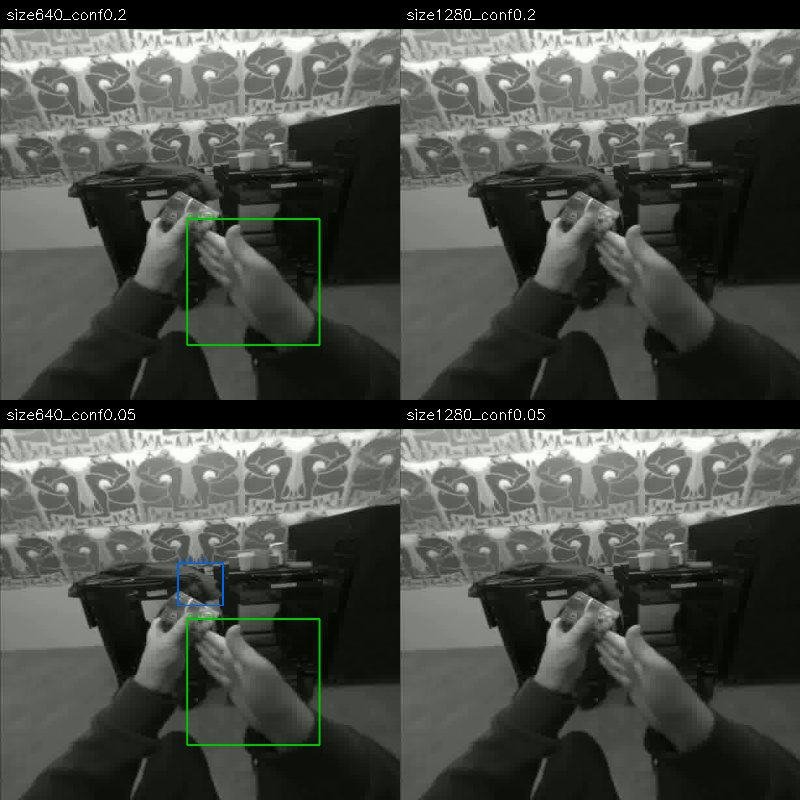

CROSS-DATASET EVALUATION · CAMERA & HAND GEOMETRY
第一视角手部重建：
跨数据集测评与采集方案
MINT · ACE-Ego-Hand · HaWoR · OLA 手部标注管线
本次工作的目标不是给模型排一个单一名次，而是回答一个数据生产问题：我们要从真实第一视角视频中获得可用的手部动作监督，应该选择什么估计器、怎样接入已有管线、还需要采集哪些约束？因此，精度、输出覆盖、流程稳定性、工程成本和交付可追溯性必须同时衡量。
可以带到组会的五个结论
- 没有跨数据域、跨指标都最好的方法。ACE K-given 在 Ego-Exo4D 共同集的相机系误差为 91.05 mm，低于 MINT 的 131.10 mm；但在 SHOW3D 共同集上是 98.77 vs 82.58 mm，方向反转。手形误差和绝对位置误差也不总是一致。
- OLA 手部阶段不是独立的新估计器。在已测 96 段校准输入上，它与官方 HaWoR 手部输出的最大坐标差只有约 1.19 × 10−7 m，存在性掩码一致。工程流程不同，不等于模型精度提升。
- HaWoR 的主要风险之一是覆盖不足。SHOW3D 全参考输出覆盖约 59.09%，Ego-Exo4D 原基线约 2.76%。共同成功集合中的较低误差，不能抵消没有结果的部分。
- 完整流程能补输出，但不等于把手标得更准。新一轮固定 12 人子集已处理完：10 段有限数值完成、2 段非有限数值失败。补全前后的共同已观察集合误差基本不变；新增帧需要单独验收。
- 建议保留 OLA 的数据生产框架，估计器做可替换后端。有可靠内参时，把 ACE K-given 与 MINT 同时保留为候选；缺内参时先用 K-free 做筛选。需要可信世界轨迹时，应增加同步、标定和独立位姿约束，而不是把单目补全当成物理真值。
证据边界：这些是固定版本、局部子集、明确适配协议下的实测。SHOW3D 使用公开 solver reference，Ego-Exo4D 使用稀疏标注 / 三角化参考，EgoDex 只做腕部代理比较。没有完成官方全量榜单复现，没有证明所有数据都与所有基础模型训练集不重叠，也没有据此证明下游机器人训练收益。
1. 我们到底在比较什么
1.1 三种算法路线，五个推理分支
| 分支 | 核心路径 | 内参 / 输出 | 本轮边界 |
|---|---|---|---|
| MINT | 视频模型联合预测相机与双手参数；基于 LingBot-Map 的推理路径 | 本次无外部 K 分支；相机与 MANO 输出解码到相机系关节 | 评估手部几何与运行成本；未把其整个数据生成工程作为已复现生产系统 |
| ACE K-free | 利用视频模型恢复逐帧双手 MANO；无需外部手部检测框 | 从预测射线拟合相机信息，解码平移与关节 | 高输出覆盖不代表遮挡处有真实观测；仍可能有尺度 / 深度偏差 |
| ACE K-given | 同一项目的另一套已发布 checkpoint | 输入针孔内参；解码 MANO 与相机平移 | 与 K-free 不只是开关 K 的区别；不能视作严格单变量消融 |
| HaWoR · hand | 检测 / 跟踪 → 时序手部回归 → MANO → 相机系手部 | 官方入口使用标量焦距与图像中心主点 | 主精度表仅测手部阶段；完整 SLAM / 世界系补全另列 |
| OLA · hand | 已有数据管线封装的 HaWoR 手部调用链 | 接口接收 fx/fy，但内部手模型仍用标量焦距；不等于任意 K 都受支持 | 本次只比较该阶段；不是 OLA 全生产 recipe 的端到端验收 |
实现依据：固定版本 MINT、ACE、HaWoR，以及本地审计的 OLA 快照。源码版本与文件证据见附录。
1.2 从视频到可交付标注，中间还差哪些步骤
- 数据与时间轴：从 manifest 定位视频；校验帧数、解码、时间戳和 subtask 区间。只读任务清单不能产生手部数据。
- 相机适配：辨认鱼眼 / 双球 / 针孔模型；去畸变、选定视角、变换 K；保持视频、标定与参考注释同帧同坐标。
- 手部估计：选择 MINT / ACE / HaWoR 后端，保存原生输出、左右手身份、存在性与逐帧 MANO / 关节，保留失败。
- 全局轨迹：若需要世界系动作，再处理相机位姿、尺度和手相机变换。HaWoR 完整路线使用手部掩码、DROID-SLAM、Metric3D 与世界系补全。
- 数据生产与质检：OLA 负责跨片段拼接、episode 坐标系、质量规则、有限修复与导出。原始 / 补全 / 插值的点必须分开标识。
- 交付与训练转换：生成与视频 ID / 时间可对齐的手部资产和 QC；由 converter 合并语言 / 子任务，转成训练格式。不是直接生成机器人关节控制。
原有生产管线的详细调用链、坐标公式和 NPZ 契约放在独立的管线技术报告。本报告集中回答：换哪些估计器有价值，哪里最容易丢数据，以及怎样评价真实采集中的风险。两个报告的历史实验批次不能混为一张精度表。
2. 数据覆盖与完成范围
“数据多”有三个不同含义：来源广、原始片段多、方法重复次数多。下面按来源和独立性报告；同一片段换模型、换相机协议、换阈值，都不算新增独立样本。
| 测试层 | 规模与组成 | 完成内容 | 可支持的判断 |
|---|---|---|---|
| 已有 ego 数据 | 275 段可用、7 段输入失败。EgoDex 96；CaptainCook4D 40；EPIC-100 32；EgoVerse 32；EPIC-55 24；EgoProceL 四子集共 51 | MINT / ACE K-free 各 275；其余三个分支各 96。合计 838 份方法 × 片段输出 | 运行覆盖、跨场景表现和成本。EgoDex 中 91 段可做腕部代理评分，另 5 段缺参考 |
| 公开扩展样例 | 166 段：EgoTactile 48、Ego-EXTRA 32、SHOW3D 38、OpenAoE 23、JD Gen-EgoData 19、Xperience 6 | MINT / ACE K-free 均完成；已具备相机适配的子集另测 K-given / HaWoR / OLA | 新数据域压力测试。Xperience 的 6 个窗口仅来自 1 段录像，不能当 6 个独立采集案例 |
| Ego-Exo4D 参考子集 | 75 段、65 个 take、23 位参与者；73 段有可评分参考 | 三分支共同集 3,916 手帧 / 62,347 有效关节；全参考 4,098 手帧 | 有标定的真实活动中，相机系 / 腕相对 / PA 一致性与覆盖 |
| SHOW3D 统一相机子集 | 38 人各 1 段；32 人公开 train 参考可评分，6 人 test 无手部参考 | 五分支各 38 段；共同集 9,029 / 15,395 参考手帧 | 多方法同输入 / 同关节 / 同输出交集比较；不是官方 test 榜单 |
| 第二轮诊断 | 检测器 75 + 38 段，3,729 个不同采样帧 × 4 设置；完整 HaWoR 12 人子集 | 检测 113/113；完整流程 12/12 已处理，10 有限完成、2 失败 | 解释参数敏感性与完整流程失败。均复用前面的原始片段，不增加独立样本量 |
2.1 新数据不是自动可信的真值
- SHOW3D：本次使用 v2 单目 tracking solver 参考，只有 20 个可对齐关节；参考“world”是随人运动的支架，不是静止物理世界。因此只报告相机系手部参考一致性，不报告世界轨迹 ATE。
- Ego-Exo4D：稀疏手部参考来自标注 / 三角化链路，涉及可见性与传播条件；不能直接等同于独立高精度动捕。参考不参与预测输入。
- OpenAoE：23 段可用；相机元数据与官方可视化的投影契约需要区分，4 段 fx/fy 差异超过 1%，最大约 24.97%。不为消除差异而随意缩放标签；此处不把模型生成标注当独立精度真值。
- JD Gen-EgoData：20 个预选源中 19 个完成适配。恢复两个 H.264 preroll 案例，保留一个内部约 404 ms 时间断裂失败；采用明确的双球到针孔映射，不把原始广角帧直接交给针孔模型。
- Xperience：公开样例视频解码 5,822 帧，而标签 5,821 帧，且存在变帧率时间轴问题。因此仅作可视压力测试，不计算 3D 准确率。
EgoLive 和 Xperience 完整集仍未取得下载授权，本次没有把它们算作已完成全量测评。MINT 公开训练来源包含 EgoDex / Ego4D / EPIC，相关结果不能声称零样本泛化；其他数据与基础模型训练集的完全不重叠也未得到证明。
3. 评测协议：怎样避免比较出错
3.1 同输入、同时间、同坐标
所有模型只接收视频和各自允许的相机信息；参考手部姿态不作为输入。解码输出到统一相机系，单位由米换算为毫米；固定左右手身份和关节映射，不用每帧最优左右交换“修正”预测。SHOW3D 缺少的拇指根关节从共同集合排除，不以掌心伪造。
原 SHOW3D 缩放后仅约 0.0651% 的 fx/fy 不一致，也会触发 HaWoR 严格适配器的拒绝。原失败记录保留；新一轮用只依赖标定的重采样同时给五个分支生成相同输入：
H = Knew Kold−1， pnew ∼ H pold
相机轴不变，参考可见性在新图像域重算；38 × 5 个分支的输入哈希已经核对。这是透明记录的输入协议变化，不是改模型，也不是把失败记为零精度。OpenAoE 较大的各向异性不能直接照搬此处“几乎等价”的解释。
3.2 指标各自回答什么问题
| 指标 | 计算口径 | 不能说明什么 |
|---|---|---|
| Camera MPJPE ↓ | 相机系对应有效关节的平均欧氏距离；不拟合平移、旋转或尺度 | 参考本身不独立时，不能叫物理绝对精度 |
| Root-relative MPJPE ↓ | 分别减去预测 / 参考手腕，再计算关节距离 | 消除了腕部平移，不能证明抓取位置或轨迹准确 |
| PA-MPJPE ↓ | 用参考做相似变换配准后比较关节 | 消除了全局位姿与尺度差异，低 PA 不等于能直接用作机器人动作 |
| 输出覆盖 ↑ | 有参考的手帧中，模型报告有效输出的比例 | 有输出不等于真实检测成功，更不等于输出正确 |
| 全参考 PCK50 ↑ | 距离小于 50 mm 的预测参考关节数 / 全部有效参考关节；无输出算未命中 | 不是仅对成功输出计算的条件命中率；不同参考域之间仍不应混算 |
主精度表取共同输出交集，避免一方只保留容易帧而另一方承担所有困难帧；同时列出各方法全参考覆盖和全参考 PCK。SHOW3D 五分支交集仅覆盖 58.65% 参考手帧，这个条件不能隐藏。
不确定性采用受试者分组 bootstrap，5,000 次重采样、种子 20260921；同一人的所有抽样片段一起进入一次重采样。不能把相邻视频帧当数万个独立样本来压窄置信区间。区间反映该有限样本与协议下的不确定性，不覆盖训练污染或参考系统误差。
4. 定量结果：先看误差类型，再看赢家
4.1 SHOW3D：绝对位置与局部手形给出不同排序
32 位有参考的参与者；五分支共同集 9,029 手帧。误差三列使用同一交集；覆盖和 PCK 两列使用各自全参考结果。下表单位是 mm / %，不可跨列混用分母。
| 方法 | 全参考输出覆盖 % ↑ | 共同集 Camera mm ↓ | 共同集 RR mm ↓ | 共同集 PA mm ↓ | 全参考 PCK50 % ↑ |
|---|---|---|---|---|---|
| MINT | 97.45 | 82.58 | 34.08 | 11.81 | 20.91 |
| ACE · K-free | 100.00 | 127.52 | 28.03 | 10.94 | 0.73 |
| ACE · K-given | 99.97 | 98.77 | 27.28 | 10.72 | 14.92 |
| HaWoR · hand | 59.09 | 80.17 | 31.02 | 11.30 | 30.52 |
| OLA · hand | 59.09 | 80.17 | 31.02 | 11.30 | 30.52 |
ACE K-given 的腕相对 / PA 误差低于 MINT，但相机系位置误差更大。HaWoR 的共同集 Camera 均值略低于 MINT，但两者差值 −2.41 mm 的 95% 区间为 [−20.95, 19.17] mm，不足以说明 HaWoR 的相机系误差稳定优于 MINT。HaWoR 的全参考 PCK50 更高、覆盖更低，反映了“输出少但部分更接近”与“覆盖广但有系统偏移”的不同权衡。
4.2 Ego-Exo4D：提供 K 的分支对绝对位置更有利
23 位参与者；三分支共同集 3,916 手帧。HaWoR / OLA 原基线只覆盖约 2.76% 参考手帧，因此没有把它们在极小交集上的条件误差放进这张三分支主表冒充公平排名。
| 方法 | 全参考输出覆盖 % ↑ | 共同集 Camera mm ↓ | 共同集 RR mm ↓ | 共同集 PA mm ↓ | 全参考 PCK50 % ↑ |
|---|---|---|---|---|---|
| MINT | 97.68 | 131.10 | 26.54 | 11.54 | 1.19 |
| ACE · K-free | 99.78 | 135.67 | 32.37 | 11.47 | 0.52 |
| ACE · K-given | 97.02 | 91.05 | 33.46 | 11.11 | 17.23 |
ACE K-given 相比 MINT 的 Camera 差值为 −40.05 mm，受试者 bootstrap 95% 区间 [−56.03, −27.17] mm；但 Root-relative 误差反而高约 6.92 mm。ACE K-free 与 MINT 的 Camera 差值区间跨过零。“有内参必然全面更好”与“手形最好就能直接提供动作”都不成立。
4.3 哪些数字不应该和主表混在一起
EgoDex 的 91 段数据只支持 ARKit 腕部代理比较；原始 SHOW3D 的两分支配对、统一标量相机后的五分支配对、12 人完整流程使用不同集合；早期 HOT3D 18 段冒烟检查也不是本表的官方 test。不能跨表挑最优数字拼成一个排行榜，更不能用新数据来源名称推断训练集完全未见。
展开：EgoDex 腕部代理结果（非完整手部真值）
44,943 个参考手帧，五分支共同输出 28,640 手帧。该代理还受到 ARKit 与 MANO 腕定义 / 坐标契约差异影响。
| 方法 | 全参考输出覆盖 % | 共同集腕部代理误差 mm |
|---|---|---|
| mint | 96.73 | 192.89 |
| ace_kfree | 100.00 | 188.07 |
| ace_k | 99.82 | 220.43 |
| hawor_camera | 63.87 | 119.11 |
| ola_hand | 63.87 | 119.11 |
5. 检测瓶颈：调大分辨率并不是通用解法
冻结 75 段 Ego-Exo4D 与 38 段 SHOW3D，逐段每 10 帧取 1 帧（每段 33 帧）。同一官方 YOLO 权重分别以 640 / 1280 输入尺寸和 0.20 / 0.05 置信门槛运行，共 14,916 次帧 × 设置推理。新诊断输出与原始基线分开保存，未覆盖官方参数结果。
| 数据域 | 尺寸 / 置信门槛 | 采样帧 | 预测槽位 | 覆盖参考槽位 | 槽位覆盖 % ↑ |
|---|---|---|---|---|---|
| Ego-Exo4D | 640 / 0.2 | 2475 | 275 | 13 / 424 | 3.07 |
| Ego-Exo4D | 1280 / 0.2 | 2475 | 817 | 58 / 424 | 13.68 |
| Ego-Exo4D | 640 / 0.05 | 2475 | 640 | 48 / 424 | 11.32 |
| Ego-Exo4D | 1280 / 0.05 | 2475 | 1867 | 158 / 424 | 37.26 |
| SHOW3D | 640 / 0.2 | 1254 | 1195 | 794 / 1606 | 49.44 |
| SHOW3D | 1280 / 0.2 | 1254 | 335 | 201 / 1606 | 12.52 |
| SHOW3D | 640 / 0.05 | 1254 | 1394 | 942 / 1606 | 58.66 |
| SHOW3D | 1280 / 0.05 | 1254 | 599 | 343 / 1606 | 21.36 |
在 Ego-Exo4D 中，1280 + 低门槛能覆盖更多参考手槽位；SHOW3D 中，同样增大尺寸反而明显降低覆盖。降低门槛还会增加背景框和左右身份错误。本轮没有空间匹配的检测 precision，也没有独立调参验证集，因此这些数值只能定位敏感性，不能用来宣布生产最优阈值。
“槽位覆盖”只问某帧某一侧是否出现预测，错误位置的框也可能计入同侧槽位。无参考的手不作为负例，因此不报告 F1。早先 4 段诊断中，raw predict 与 tracking 的存在性掩码相同，只能排除这 4 段上的大规模跟踪阶段丢失，不能证明全部 75 段的失败原因相同。

展开第二个固定检测案例

6. 完整 HaWoR：跑通、填满、正确是三个层次
从有参考的 SHOW3D 参与者中，按预先固定哈希顺序选择 12 人、每人 1 段；执行未修改的检测、手部 / mask、DROID-SLAM + Metric3D、世界系 infiller。每段 321 帧、30 FPS。它包含完整官方世界系路线，但不是 OLA 的生产 recipe。
最终状态：12/12 已处理，10/12 有限数值完成，2/12 因非有限几何输出失败；10 个成功案例已生成可视化。失败原生结果保留，没有用插值或置零假装成功。早期编排环境缺 joblib 的尝试未进入模型推理，独立保留；随后仅换用已有依赖齐全的环境，选样和模型不变。
| 阶段 / 集合 | 全参考覆盖 % ↑ | Camera mm ↓ | RR mm ↓ | PA mm ↓ | 全参考 PCK50 % ↑ |
|---|---|---|---|---|---|
| raw | 53.61 | 93.80 | 33.43 | 11.58 | 20.35 |
| full | 83.67 | 150.07 | 44.60 | 13.24 | 22.68 |
| raw_common | 52.05 | 94.01 | 33.31 | 11.60 | 20.08 |
| full_common | 52.05 | 94.01 | 33.31 | 11.60 | 20.08 |
raw / full 使用各自输出集合；raw_common / full_common 则使用补全前后都有输出的同一集合。失败片段仍在全参考覆盖 / PCK 分母中；共同集合误差排除了没有输出的失败。full 的 valid 包含模型补全，不能解释为检测召回率。
共同集合两行误差在数值误差范围内一致，符合实现中主要替换缺失窗口的行为。因此，整体输出覆盖增加不能被解释成已有观测帧的几何精度变好。各自集合的均值变化混合了新补入帧与样本构成变化，也不能直接叫“退化百分比”。SHOW3D 的参考世界系并不静止，本轮仅把世界输出变回相机系进行手部比较，没有验证 SLAM 的物理世界 ATE 或长期尺度漂移。
展开：全部 12 个预选案例与失败记录
| 片段 ID | 状态 | 观察手帧 | 同时观察双手帧 | 补全手帧 |
|---|---|---|---|---|
| b289dde081ea | 有效完成 | 458 | 138 | 184 |
| f279703ee217 | 有效完成 | 428 | 117 | 213 |
| f2a3dcd0d7d7 | 非有限数值 | 30 | 0 | — |
| d4af661c738f | 有效完成 | 347 | 49 | 295 |
| 79a0ab53e56e | 有效完成 | 9 | 1 | 631 |
| 8a3e5bd19cb1 | 非有限数值 | 53 | 0 | — |
| ccff21cd62cd | 有效完成 | 227 | 18 | 414 |
| 9153ef531889 | 有效完成 | 378 | 83 | 264 |
| 5fb25edf020c | 有效完成 | 214 | 23 | 427 |
| 731ab4e94c75 | 有效完成 | 535 | 214 | 107 |
| e5fd85b27ad6 | 有效完成 | 321 | 23 | 320 |
| 8654b5b387f1 | 有效完成 | 370 | 50 | 271 |
观察手帧 / 补全手帧统计包含无参考帧；不能与表 6 的参考手帧分母直接相除。缺少同时可见双手上下文是需要排查的假设，不是已证明的唯一 NaN 成因。
7. 案例：把数值和实际现象放在一起
以下展示的是有限数量的诊断案例，不是成功率抽样。公开页仅放可明确署名的 SHOW3D 衍生展示；其他来源的受限 RGB 视频没有随报告上传。可视化是预测叠加，不是真值叠加；二维看起来贴合也不保证深度正确。
同一输入，切换估计器观察
下面固定为 12 人完整流程哈希选样的首例 b289dde081ea，不是按方法胜负选例。每段视频左栏是输入、右栏是预测；青色左手、橙色右手。可切换 MINT、ACE 两分支与 HaWoR 手部阶段；切换时保留播放位置，便于检查同一动作。OLA 在本协议下与 HaWoR 手部阶段数值一致，不重复放一份相同演示。
7.1 固定首个完整流程案例：覆盖提高，但新增帧仍需验收
SHOW3D b289dde081ea：raw 参考覆盖 72.39%，Camera 84.27 mm、RR 22.22 mm；full 参考覆盖 100%，Camera 91.67 mm、RR 24.47 mm。全参考 PCK50 从 7.25% 到 8.31%。两组 Camera 均值使用不同输出集合，不能据此说所有原始帧都变差；共同已观察集合基本不变。
7.2 困难案例：输出补齐后仍有较大的全局偏移
SHOW3D e5fd85b27ad6：raw Camera 159.92 mm、RR 37.40 mm；full Camera 186.40 mm、RR 49.89 mm。全参考 PCK50 仅从 1.24% 到 1.82%，即使输出覆盖从 52.14% 变为 100%。该案例按“可展示的高误差”事后选择，用来解释失效模式，不用于估计总体频率。
7.3 其他真实活动给出的诊断
| 活动案例 | 局部测量 / 现象 | 能够说明的事情 |
|---|---|---|
| Ego-Exo4D 车轮操作 | Camera：MINT 约 213 mm，ACE K-given 约 81.63 mm；RR：约 26.79 vs 34.71 mm | 绝对位置改善与局部手形改善可能方向相反，不能只看一个指标 |
| Ego-Exo4D 远距 CPR | 二维覆盖看似合理，仍存在显著三维误差 | 小手、远距离和遮挡时，视觉 overlay 不能代替深度评估 |
| Ego-Exo4D 钢琴 | MINT 与 ACE K-given 的案例 Camera 均值仅差约 2.09 mm | 单段微小差异不应被包装为稳定胜出 |
| EgoTactile 手套 / 裸手 | 48 段覆盖两种外观；本轮未把其输出当独立 3D 准确率 | 可检查存在性、手型与时间连续性，不能由“看上去合理”计算 MPJPE |
上述活动案例为事后诊断选择；完整推理和受限可视化保存在内部测评产物中。它们是解释机制的例子，不替代固定全集表。
8. 效率、并行与数据交付
| 分支 | 片段数 | 中位耗时 s / 片段 | 峰值分配 GiB | 计时范围 |
|---|---|---|---|---|
| mint | 275 | 9.52 | 7.89 | 常驻模型；解码 / 推理 / 保存 |
| ace_kfree | 275 | 5.75 | 15.40 | 常驻模型；解码 / 推理 / 保存 |
| ace_k | 96 | 5.49 | 14.40 | 常驻模型；解码 / 推理 / 保存 |
| hawor_camera | 96 | 33.89 | 5.80 | 含逐片段重复加载；非等价计时 |
| ola_hand | 96 | 27.17 | 5.80 | 含逐片段重复加载；非等价计时 |
MINT / ACE 数字为单 H100、模型常驻、各自原生输入分辨率下的解码 / 推理 / 保存，不含初次加载和渲染。HaWoR / OLA 的手部运行逐段初始化，且不包含完整 SLAM 与最终导出，计时边界不同，不能据此宣称几倍算法加速。显存为框架峰值分配，而不是整卡占用。
本次两卡主要采用跨片段 / 跨分支任务并行：一张卡一个有边界的 worker，独立输出目录、失败标记和可恢复 manifest；检测诊断与完整流程可分卡运行。无需为了短片段推理启动训练式 DDP。多机扩展优先解决任务领取、防重复输出、共享存储 I/O 和失败重试，而不是默认每个模型跨卡切分。
8.1 建议交付给 converter 的内容
| 资产 | 必须明确的语义 |
|---|---|
| 逐帧手部数组 | 建议规范化为 [T, 2, 21, 3]；明确左右顺序、关节定义、米 / 毫米及 camera / episode_world。20 关节参考不代表输出只能 20 关节 |
| 时间与视频映射 | video ID、源 frame ID、时间戳、采样 FPS、裁剪起点、相机视角；能回到原 subtask |
| 有效性与质量 | observed / inferred / filled / interpolated 分开，保留 missing、nonfinite、左右身份和 QC 掩码 |
| 标定与来源 | K / 畸变模型、resize / rectification 变换、相机位姿来源和尺度状态；模型 / checkpoint / 适配器哈希 |
| 人工验收包 | 1–2 个完整对齐例子、失败例子、字段说明、按片段统计；不能只交“存在 NPZ”的文件列表 |
这是一份建议的跨后端交付契约，字段命名仍需与现有 converter 确认。不能把建议字段宣称成四种模型已经原样输出的共同 schema。
9. 现阶段怎么选
| 实际目标 | 基于本次证据的选择 | 上线前必须补的验证 |
|---|---|---|
| 快速覆盖大量来源不统一的 RGB | 先并行保留 MINT 与 ACE K-free，输出作为候选伪标签 / 筛选资产 | 按场景验收深度、尺度、左右手和遮挡；不是默认全量合格 |
| 有可靠针孔内参的采集 | 加入 ACE K-given，与 MINT 配对比较后按目标域选择 | 不能从 Ego-Exo4D 优势直接外推 SHOW3D；K-free / given 为不同权重 |
| 复用当前 OLA 标注生产流程 | 保留数据适配 / 断点续跑 / QC / 导出框架；将手部估计后端可替换 | 接口对齐后做端到端回归测试，不把手部阶段一致性解释成全流程相同 |
| 长时世界系手腕轨迹 | 把视觉重建和可靠相机 / 腕部约束结合；完整 HaWoR 可作研究基线 | 独立世界坐标、米制尺度、同步、遮挡后恢复；NaN 与补全必须可审计 |
| 构建评测真值 | 独立多视角 / 动捕 / 经标定的外部位姿子集 | 不能用同源手部模型生成的伪标签来证明该模型精度；约束与评估真值分开 |
因此，当前最合理的工程决策不是立刻把全部生产任务切到某一个“冠军”，而是保留统一输入 / 输出与 QC，先在目标采集域形成小规模可信验证集，再选后端。如果目标是最终 VLA 训练有效性，还需固定训练预算与任务，比较数据加入前后的下游成功率；本报告未完成这一层实验。
代码开放不等于所有模型、权重、MANO 和数据都允许商用或任意再分发。正式采集服务 / 生产部署前应逐项核查对应许可；公开报告不附带这些资产或额外授权。
10. 采集方案与下一轮验证
10.1 如果接入 VIVE Tracker，它解决什么、不能解决什么
摄像头刚性安装 1 个 tracker，左右手各 1 个 tracker，可以提供相机 / 手背刚体的 6DoF 约束；两只 tracker 可先验证相机 + 单手原型。它不直接提供指节姿态，不能代替手部视觉模型或独立手指真值。此处是待硬件验证的方案，并未完成实机标定与精度测量。
TV←H = TV←Thand TThand←H
TC←H = (TV←C)−1 TV←H
约定 TA←B 把 B 系坐标变到 A 系。需要标定摄像头与其 tracker 的固定外参，以及手部 tracker 与目标腕坐标的固定外参；手背安装松动会破坏刚性假设。相机时间使用曝光中点，记录 tracker 原始时间戳、时钟偏移 / 漂移和追踪状态，不跨无效区间盲目插值。
作为误差预算示例：手以 1 m/s 运动时，10 ms 不同步就对应约 10 mm 位移误差。该数值是量纲估算，不是本次设备的实测误差。
10.2 三个可验收的下一步
- 冻结目标域验证集：建议 12 类真实任务 × 5 次 × 30–60 秒，覆盖单双手、工具、远距、强遮挡、快速头动、手套与无手负例。预先固定划分，不能按模型结果筛选“好测试集”。
- 把检测诊断变成真正实验：补人工左右身份与空间框 / 关键点子集，划分调参集和冻结测试集；比较原始参数、替换检测器、低门槛 + QC，不只看槽位覆盖。
- 评估约束是否真的有用：固定手部模型，对比 vision-only 与 vision + tracker / stereo；用未作为输入约束的独立多视角或动捕作检查，报告手腕位置 / 旋转、手指误差、漂移、掉跟踪率、单位合格数据成本。
若进一步验证训练收益，应把“模型跑通 → 参考一致性 → 独立几何精度 → 合格数据率 → 下游任务收益”作为五个独立验收关口。当前证据主要完成前两层及部分运行稳定性检查。
附录 · 版本、误差区间与可核查资产
| 方法 | 版本 |
|---|---|
| MINT | 1bd21e4edd6d5d2d59789ce64ee5450de24a7c2b |
| ACE-Ego-Hand | 97578680931b3f1c8111396c100d595b98857fb8 |
| HaWoR | 66c7d4108d58a716deccd192cb7645170cdc7bd7 |
| OLA | 8470fb3 + audited dirty snapshot (not a pristine upstream release) |
OLA 采用经过审计的 dirty snapshot，不能仅凭短 commit 重建全部字节；关键手部封装文件 SHA-256 为 99d31f5098db6bce0c0b09d6e28488e8830fed2dc660df754ce32323aaa5ff1c。本公开仓库只发布报告，不发布该私有源码。
展开：全部主表配对差值及 95% 区间
| 数据域 | 比较 | 误差类型 | 差值 mm | 95% 区间 mm |
|---|---|---|---|---|
| SHOW3D | ACE K-free − MINT | camera | 44.94 | [30.75, 60.06] |
| SHOW3D | ACE K-free − MINT | root_relative | -6.05 | [-10.02, -2.00] |
| SHOW3D | ACE K-free − MINT | PA | -0.87 | [-1.52, -0.32] |
| SHOW3D | ACE K-given − MINT | camera | 16.18 | [2.09, 31.49] |
| SHOW3D | ACE K-given − MINT | root_relative | -6.80 | [-10.77, -2.64] |
| SHOW3D | ACE K-given − MINT | PA | -1.09 | [-1.80, -0.49] |
| SHOW3D | HaWoR hand − MINT | camera | -2.41 | [-20.95, 19.17] |
| SHOW3D | HaWoR hand − MINT | root_relative | -3.06 | [-8.03, 3.38] |
| SHOW3D | HaWoR hand − MINT | PA | -0.51 | [-1.12, 0.26] |
| Ego-Exo4D | ACE K-free − MINT | camera | 4.57 | [-18.52, 27.28] |
| Ego-Exo4D | ACE K-free − MINT | root_relative | 5.83 | [1.42, 10.38] |
| Ego-Exo4D | ACE K-free − MINT | PA | -0.07 | [-0.80, 0.52] |
| Ego-Exo4D | ACE K-given − MINT | camera | -40.05 | [-56.03, -27.17] |
| Ego-Exo4D | ACE K-given − MINT | root_relative | 6.92 | [2.26, 11.37] |
| Ego-Exo4D | ACE K-given − MINT | PA | -0.44 | [-1.12, 0.13] |
实现证据的最短追踪路径
- HaWoR：detect_track_video.py →
lib/pipeline/tools.py::detect_track；检查 confidence 0.2、同侧框保留、JPEG 缓存与时间采样。 - HaWoR：hawor_video.py →
hawor_motion_estimation / hawor_infiller；检查标量焦距、120 帧补全窗口、有效性掩码与双手上下文。 - ACE：mano_utils.py →
mano_forward_batch_full；核对 MANO 平移与相机平移解码。 - MINT：架构与推理边界；直接模型推理与可选数据生成管线分开，不能把后一套未公开完整集成算作一键复现。
公开 results.json 保存未四舍五入的聚合结果、配对区间、完整流程逐例计数、上游固定版本和来源快照哈希；网页表格由它生成，避免手工抄数漂移。它不包含参考关节数组、受限原视频、模型权重或服务器路径。构建说明提供静态网页重建方法；这不等于发布了可复现全部模型推理所需的数据与授权。
资料、署名与素材许可
- MINT 官方仓库：模型 / 数据生成工程边界、训练来源与使用限制；实验以附录固定版本为准。
- ACE-Ego-Hand 官方仓库与论文：视频手部恢复、两种 checkpoint 与针孔输入约束。
- HaWoR 项目与论文：第一视角世界系手部运动重建。
- SHOW3D 数据与说明：Patrick Rim、Kevin Harris、Braden Copple、Shangchen Han、Xu Xie、Ivan Shugurov、Sizhe An、He Wen、Alex Wong、Tomas Hodan、Kun He，CVPR 2026。
- Ego-Exo4D：对应许可与访问说明；本公开报告不重新分发其 RGB。
- Open-AoE、JD Gen-EgoData、Xperience 公开样例：数据适配诊断来源。
- VIVE Ultimate Tracker：候选刚体位姿采集硬件，不代表已验证的手指动捕系统。
本页 SHOW3D 展示素材基于其公开发布的、已做面部模糊处理的视频，遵循 CC BY-NC 4.0，用于非商业研究汇报。修改包括截取短片段、相机域重采样、缩放拼接、预测框 / MANO 叠加和文字说明；不代表原作者认可本报告或本地评测协议。完整来源和变换记录见 素材署名表。模型与 MANO 的独立条款仍适用，不随网页赋予使用权。
结论截至上述证据快照。后续新增测评应另存协议和结果，保留失败与历史数字，不静默覆盖当前实验定义。